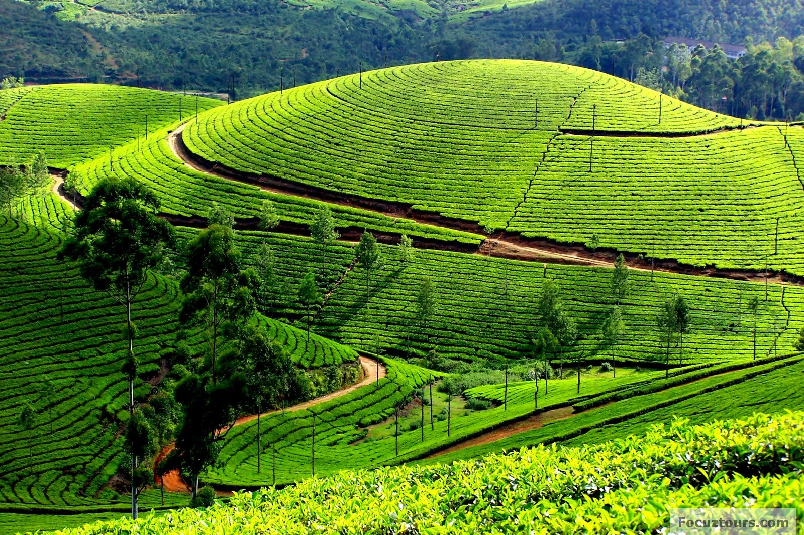
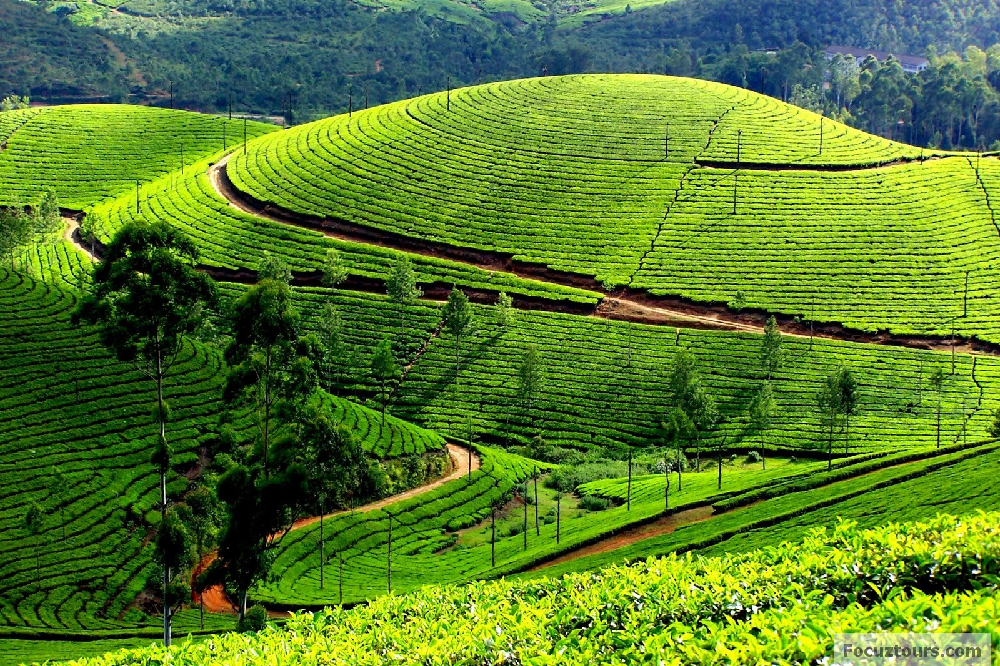

Welcome to my blog

The Nilgiris
Nilgiris is India's first biosphere. It has been declared as one of the 14 'hotspots' of the world because of its unique bio-diversity.Rolling grasslands, dense sholas, waterfalls, streams, lakes, vast expanse of tea plantations, interspersed with vegetable gardens, spectacular view points, an amazing variety of flora and fauna, fabulous trekking trails, innumerable heritage sites, spell binding sunrises and sunsets, magical light, pollution free atmosphere, mist, clouds, fog, star studded skies, serenity etc.
Few pics....
 
